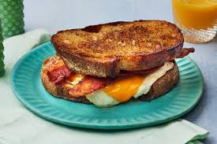

Bacon, Egg, & Cheese Sandwich

How to Make a Fire Bacon, Egg, & Cheese Sandwich
This sandwich is quick, easy, and healthy. Once you make one
of these, you will feel inclined to make them everyday. If you buy
quality ingridients for this sandwich, you will feel ready to run
through a wall in the morning after eating this bad boy.
Ingridients
- 2 Slices of Sourdough Bread
- Butter
- 2 Pasture-raised Eggs
- Raw Cheddar Cheese
- 3 Slices of Bacon
- Cholula Hot-Sauce
Steps
- Place 3 slices of bacon in the air-fryer at a temperature of 390 degrees fahrenheit and for a time of 8-minutes
- Set a cast-iron skillet over a medium-low heat stove
- Place 1 tablespoon of butter in the skillet
- Crack two eggs into the skillet and bring them to over-medium
- Remove the bacon and eggs. Place them on a plate for the time being
- Put another tablespoon of butter in the skillet and increase stove heat to madium-high
- Place the two slices of sourdough bread into the skillet
- Take the block of raw cheddar and thinly-slice to a quantity of your liking
- After 2-3 minutes, flip the slices of bread in the skillet
- Once both sides of the bread are lightly toasted, remove the bread and place on a plate
- Assemble the ingridients onto the bread and apply a generous amount of Cholula Hot-Sauce
Home